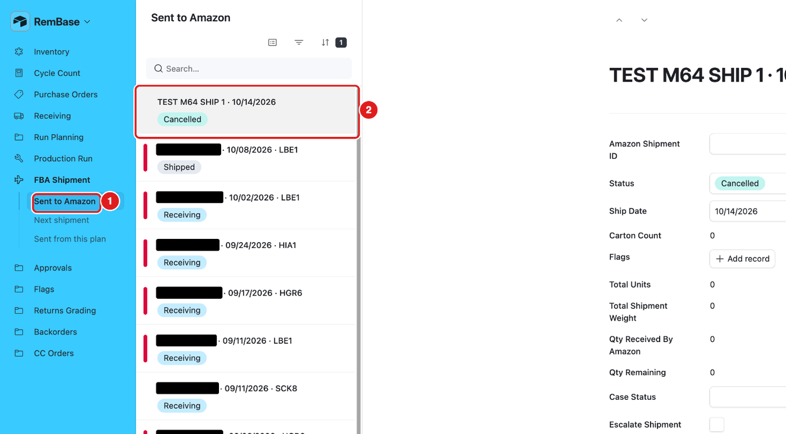
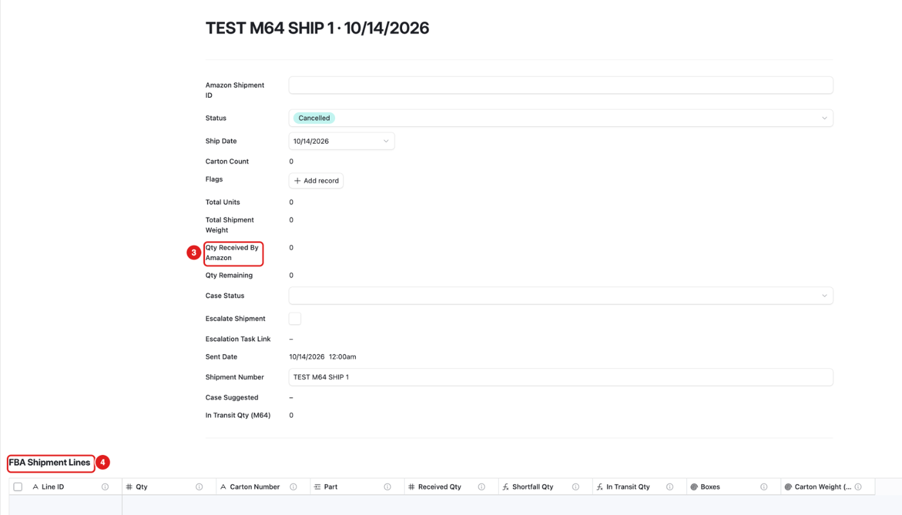
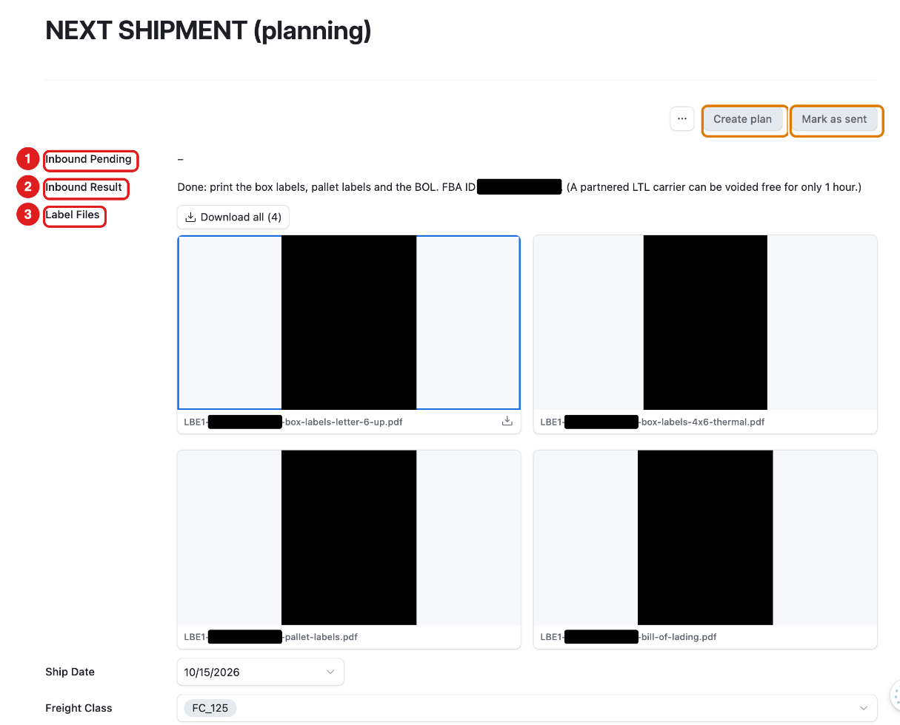
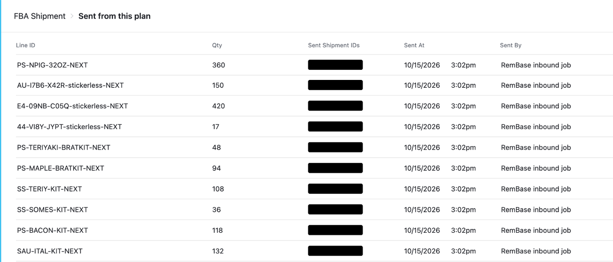
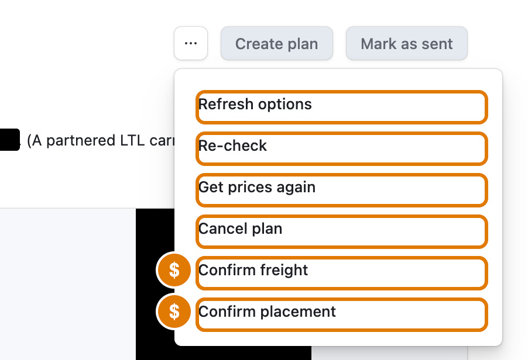

What this page is for
FBA means Amazon stores and ships our products. We send boxes to Amazon warehouses. This page plans those shipments, gets the labels and tracks what Amazon received.
Who uses it: anyone on the team. Chad usually prints the labels and packs the boxes.
The buttons on this page are REAL, not practice. They talk to Amazon for a real shipment.
- Confirm placement and Confirm freight cost money. Check the price first.
- Press a button once. Then wait until Inbound Pending is empty again.
- Not sure? Ask Adam before you press.
Sub-pages
| Sub-page | What it is for |
|---|---|
| Sent to Amazon | Every shipment we sent, and how much Amazon received. |
| Next shipment | The shipment we are building now. Labels are here. |
| Sent from this plan | The lines that went out with the last plan. |
Task: check a shipment we sent
Click FBA Shipment in the menu.
Click Sent to Amazon (1).
Click a shipment in the list (2).

Read the numbers:

- Status: Shipped, Receiving, Closed or Cancelled.
- Total Units: how many we sent.
- Qty Received By Amazon (3): how many Amazon has counted.
- Qty Remaining: how many Amazon has not counted yet.
- FBA Shipment Lines (4): one line per product.


The Next shipment page

Read it from top to bottom:
- 1 – Inbound Pending: a button was pressed and RemBase is working on it. Wait.
- 2 – Inbound Result: the last message from RemBase. It tells you the next step. While Amazon is working it says what is happening, for example “Getting carrier quotes from Amazon. This takes a few minutes.” Wait until it changes.
- 3 – Label Files: the box labels, pallet labels and Bill of Lading (BOL).
- Ship Date, Freight Class: shipping details.
- Approved Placement Price, Approved Carrier Total: what Amazon and the carrier charge (hidden on this site).
- FBA Shipment Lines (bottom of the page): each product, how many units and how many boxes.
While a plan is in progress you also see:
- Step 1 – a list of Amazon warehouse choices, with their fee.
- Shipment Pallets – the pallets: size, weight, and “not stackable”.
- Step 2 – a list of carrier choices, with their price.
Task: print the box labels
- Open FBA Shipment → Next shipment.
- Read Inbound Result. It says when the labels are ready.
- Under Label Files, click the file you need. The files come in two steps:
- After Confirm placement: the two box label files.
- After Confirm freight (truck / LTL shipments only): the pallet labels and the bill of lading.
- box labels letter 6-up – six labels on one letter page.
- box labels 4x6 thermal – for the label printer.
- pallet labels – Amazon gives four labels for each pallet, one for each side.
- bill of lading – the paper for the truck driver.
- The file opens. Print it.
- Put one box label on every box. Do not cover other labels.
- Put the four pallet labels on the four sides of each pallet.
Sent from this plan
FBA Shipment → Sent from this plan lists each product line that went out with the last plan: how many units, when, and which Amazon shipment it went in. It is read-only.

The buttons, in order (real buttons: be careful)
Anyone on the team may press these for a real shipment. They work on any open shipment that is not a TEST shipment. Read what each one does first.
| Button | What it does |
|---|---|
| Create plan | Starts a new shipment plan with Amazon. |
| Refresh options | Asks Amazon again for warehouse choices. |
| Confirm placement | Accepts the Amazon warehouse choice. Costs money. |
| Get prices again | Asks carriers for new prices. Does not cost money. |
| Confirm freight | Books the carrier. Costs money. |
| Re-check | Asks Amazon for the latest status. |
| Cancel plan | Cancels the plan with Amazon. |
| Mark as sent | Tells RemBase the boxes left our building. |
Some buttons are inside the … menu at the top of the page.

What you should see
- After a button press, Inbound Pending shows a message, then clears.
- Inbound Result then says what happened and what to do next.
- After Confirm placement, the two box label files appear under Label Files.
- After Confirm freight (truck shipments), the pallet labels and the bill of lading appear too.
Products with two Amazon SKUs
- Some products have two Amazon SKUs: the original and a -stickered or -barcode version. RemBase treats both as the same product. The stock is counted on the original product.
- Becca chooses the one SKU to ship under. In the sku-map, she ticks Ship as on that SKU.
- If a product has two active SKUs and not exactly one is ticked, the shipment stops. Inbound Result says NOT DONE and asks Becca to tick Ship as. Nothing is sent to Amazon until this is fixed.
Common mistakes
- Pressing a button twice because nothing seems to happen. Wait for Inbound Pending to clear.
- Using old labels. Always print from the shipment you are packing.
- Wrong label size. Use 4x6 for the thermal printer and 6-up for normal paper.
- Confirming without checking the price. Confirm placement and Confirm freight cost money.
- Practicing on this page. These buttons are real. There is no TEST shipment.
- Two Amazon SKUs with no Ship as tick. The shipment stops until Becca ticks Ship as on one SKU.